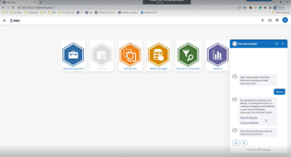

Note: This release is currently only available for IPRO Cloud.
The new release of OPEN DISCOVERY focuses on the features you have been asking for. IPRO is committed to an ongoing balance between innovation and meeting customer needs.
Schedule your upgrade with IPRO Support today!
|
|
Note: This release is currently only available for IPRO Cloud. |
Chat Help –Introducing our new in-app assistance tool to OPEN DISCOVERY! Now users can get help right from within the application. With this new feature, you can easily get access to our help documentation and create a support request without leaving the application.

New LIVE EDA Promotion Fields - We’ve added new promotion fields for Document Tags, Promotion Name, Protected Label and Connector Name to improve when promoting data from LIVE EDA. This new feature provides a streamlined workflow to make it easier for users to find and\or reconcile documents in Review. The following new fields will be available when using LIVE EDA v. 6.6.3 Release and can be added and mapped manually for existing cases.
EDAPROMOTIONNAME (the user supplied name given to the data set at time of promotion)
EDADOCTAGS (any document tags applied in Live EDA prior to promotion)
EDACONNECTORNAME (the source connector used to gather the data for promotion)
EDAPROTECTIONLABEL (included for data using MIP (Microsoft Information Protection)

New Page Count Field – “System Page Count” is now available to apply to your document grid or coding form. This new field provides the user with the ability to see the total number of pages for document images created from mass imaging, tiff on the fly or through importing.

Analytics Clustering Improvement – Clustering updated to improve performance and to enable the support of larger data sets. Updates also include data handling and optimization designs to reduce processing failures. Support for larger volumes and sets over 100,000 documents.
Job Manager Improvements - Job Manager now offers an improved user experience with the introduction of two new features in the Job Details view.
A new ‘Overall Progress’ report has been added to the bottom left of the window, providing an up-to-date view of the number of tasks in each status.
Task Filter has been added in the top right of the window, enabling users to quickly filter tasks based on their status.

IPRO-Q Compatibility - IPRO-Q is now updated and fully compatible with Relativity Server 2022 Patch 3.
Case Creation Template Update – Optimization Scope Saved Search
Added “File Extension” contains xls to be automatically pre-rendered to increase review speed and hit highlighting experience for users viewing excel type documents.

AR-14327 – Improved the look of large redactions when printing to PDF to have the redaction text adjust to the size of the redaction.
AR-181745- Addressed a display issue for PDF files containing charts to allow for the text labels to be readable. *PDF files will need to be cleaned up and re-optimized to properly render.
AR-18174 – Addressed a rendering issue for PDF files containing underlying text layers to display on top of the web viewer causing overlapping text. *PDF files will need to be cleaned up and re-optimized to properly render.
AR-18714 – Fixed an issue with Document Tag Groups not sorting properly within the document grid.
AR-13378 – Fixed an issue viewing multi-page images in the image viewer when imported from .OPT load file.
AR-17597 – Improvements to Near-Duplicate comparison tool were added to ignore special inline and carrot characters for comparing text.
AR-17585 – Improved performance and handling of persistent hit highlighting for excel and word documents within the native viewer.
AR-19178 – Fixed an issue displaying JPG and TFF images within Image Viewer for users using Firefox.
AR-11165 – Performance improvements to “Batch Check In” when a batch contains many documents (500+).
AR-19342– Emails would display in Web Viewer in UTC time not adhering to the time zone offset value. This has been corrected to display times appropriately as configured. (Note: This is only applied to documents optimized post upgrade. If you want to have the proper timezone offset applied to existing documents, you will need to re-optimize them.)
AR-9539 – Using Advanced or Visual Search to search for “Batch Assigned To” will now return search results.
AR-15461 – Updated //TEXT contains search type to longer cause the review application to crash while navigating through documents. This fix is available in 2023.11.3 and up.
AR-18307 – Improved Advanced Search to error when incorrect search syntax is used instead of causing the application to become unresponsive.
AR-474 – Improved importing of redactions to allow two redaction categories with the same name \ different category IDs to be used when importing data to avoid import failure. The first redaction category ID will now be imported, while a new error message will alert the user to the duplicate redaction category existence after data has completed uploading.
AR-18229 – Updated redaction imports from DLF file to look at existing redaction name instead of ID to allow for correct import.
AR-18266 – Updated redaction imports to import if the redaction category or ID does not exist in the case.
AR-8633 – New error messaging included when importing redactions using a DLF that have invalid image coordinates. The import will continue to load, fail import, but now provide an error message to the user in dlf.err file.
AR-5781 - 8-bit color images imported into Review would be handled as grayscale when exported to PDF. Logic has been added to determine the source and handle correctly.
AR-17928 - Improved performance when validating a large set of documents for Export/Production.
AP-5733 – File type filter settings could display unselected types when an .INI was used during case creation. This has been resolved to properly display the selected file types and provide better feedback reporting of file types selected in summary view.
AP-5682 – In some instances, an error could be encountered with long file paths. Additional logic has been added to handle this scenario.
AP-5903 - In certain rare scenarios long file path handling could be unsuccessful and not provide detail that file extract was not successful. Improvements have been made to account for more situations where the case directory and\or data file paths were exceedingly long. In addition jobs will not be able to start if pathing exceeds these limitations.
AR-16908 & AR-16269 – Case Data Summary report is updated to dispense reporting results to grid and graph chart.
AR-17592 – Processing Case Storage Report & Review Case Storage Report is updated to dispense reporting results to grid and graph chart.
AR-3476 – Additional clean-up was added for empty temporary folders created when viewing PNG files.
AR–17197 & AR-11219 – Updated Permissions Group to allow more than 200+ cases to be assigned to a group.
AR-13658 - Improved handling for Analytics Clustering when large files would cause the job to fail.
AR-13261 – Updated System Has Native field to populate accurately when importing documents from Admin Desktop.
AR-18159 – Job Manager updated to cancel Analytics Clusters properly when a user selects to cancel job.
AR-10791 – Updated Job Manager Agent to properly handle importing large amount of text into a case.